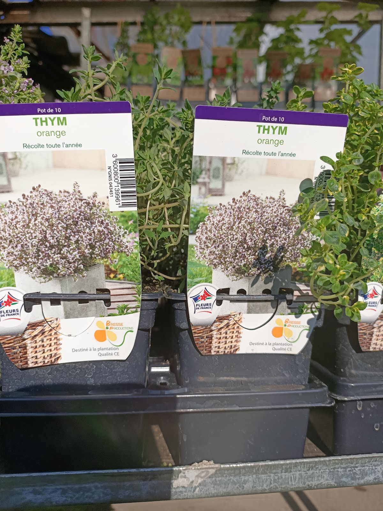
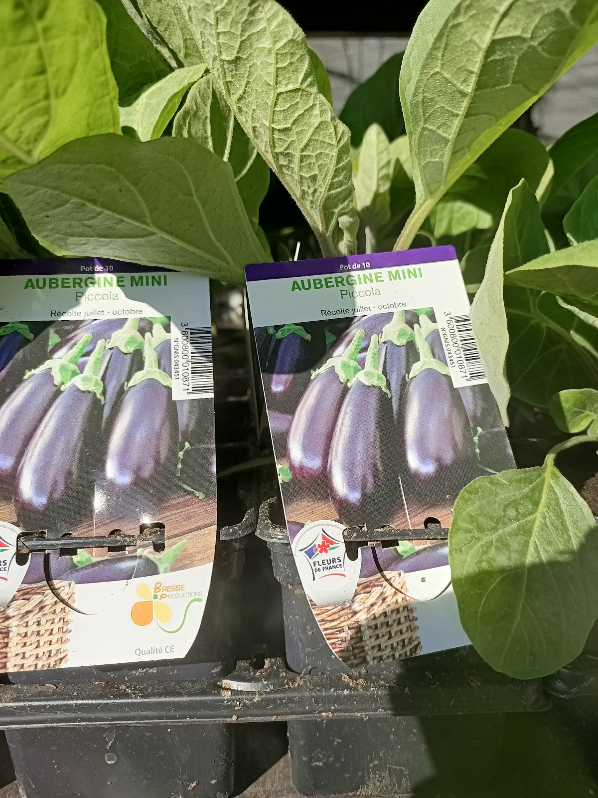
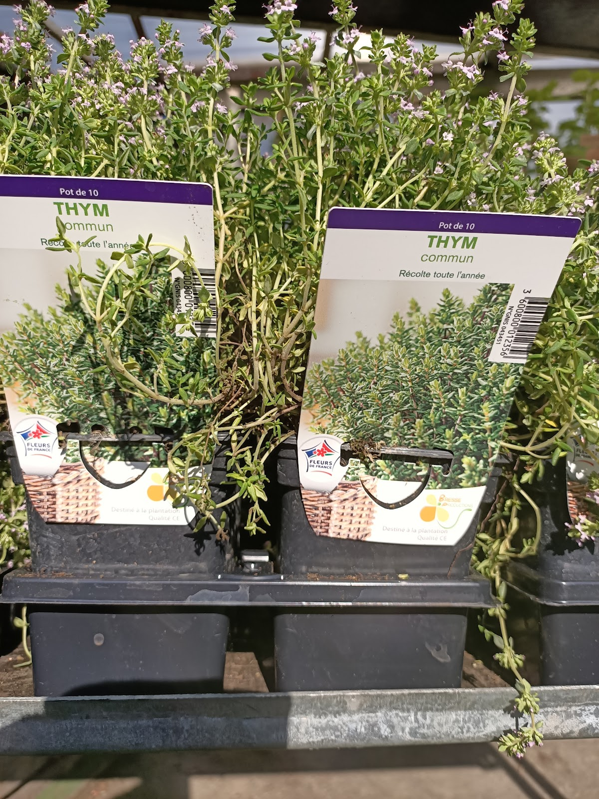

01
Plantes & variétés
Pour trouver une plante qui vous plaît vraiment et repartir avec des conseils utiles pour votre choix.
Voir la sélection ↘Fleuriste · Saint-Étienne
Une adresse stéphanoise pour choisir, composer et se laisser guider parmi des plantes, fleurs et créations végétales.

Un univers végétal à explorer
Ici, la visite ne se résume pas à prendre une plante sur une étagère. Les avis parlent d’un accueil attentif, de patience et de conseils adaptés.
Pour offrir, fleurir un intérieur, composer pour une occasion ou simplement découvrir de nouvelles variétés, la boutique met l’échange et le végétal au centre.
Demander conseil au 04 77 33 14 54 ↗Fleurs & végétal
Pour trouver une plante qui vous plaît vraiment et repartir avec des conseils utiles pour votre choix.
Voir la sélection ↘Des compositions florales pour offrir, faire plaisir ou accompagner les moments importants.
En parler ensemble ↗Une écoute attentive et des recommandations selon vos envies — un point régulièrement salué par les clients.
Lire les avis ↓Un aperçu de la boutique




« Difficile de repartir les mains vides quand on aime les plantes. »
— Avis Google, mai 2026
La preuve par les mots
Excellente découverte !
Très belles plantes, beaucoup de variétés rares et originales, avec de vrais conseils de passionné.
Accueil chaleureux, disponibilité et qualité au rendez-vous.
Difficile de repartir les mains vides quand on aime les plantes😄
Je reviendrai avec plaisir.
Nous avons fait confiance à Sébastien pour notre mariage ! Nous avions des objets à mettre en valeur au centre de nos tables et il a répondu à nos attentes à la perfection ! Tous les invités ont étés impressionnés et sont d'ailleurs repartis avec ! Encore un immense merci d'avoir contribué à rendre ce jour si magique !
Très accueillant, à l'écoute, vous conseille bien, très patient si vous demander des conseils. Et 10 % sur vos achats avec la carte fidélité, à chaque achat pas besoin d'attendre des promos. J'y retournerai volontier même si je n'habite pas à Saint - Etienne.
J'adore ce magasin. Le patron est super sympa, de très bon conseil et ses plantes, fleurs,compositions sont de très bonne qualités. Je recommande fortement si vous voulez de la qualité, un bon accueil et de bons conseils.
Tres bidn patron soufiqnt pfix moydn belles fleurw rt composition a la demande
Venir à la boutique
Avant de venir
La boutique se situe au 14 Rue des Adieux, 42000 Saint-Étienne. Le bouton « Itinéraire » ouvre directement Google Maps pour préparer votre trajet.
La fiche et les avis disponibles mentionnent des fleurs, des plantes, des compositions ainsi que des variétés originales. Pour une demande précise, le plus simple est d’appeler avant votre visite.
Oui. L’écoute, la patience et la qualité des conseils sont régulièrement citées dans les avis clients. Vous pouvez également appeler la boutique pour échanger directement.
Les avis disponibles mentionnent des compositions florales et une réalisation pour un mariage. Pour connaître les possibilités adaptées à votre occasion, contactez directement la boutique.
Du lundi au samedi : 08:30–12:00 puis 14:00–18:00. Le dimanche : 08:30–13:00.
Vous pouvez appeler directement Aux Fleurs Du Soleil au 04 77 33 14 54. Sur mobile, le bouton « Appeler » reste accessible en bas de l’écran.
Une envie, une occasion, une question ?